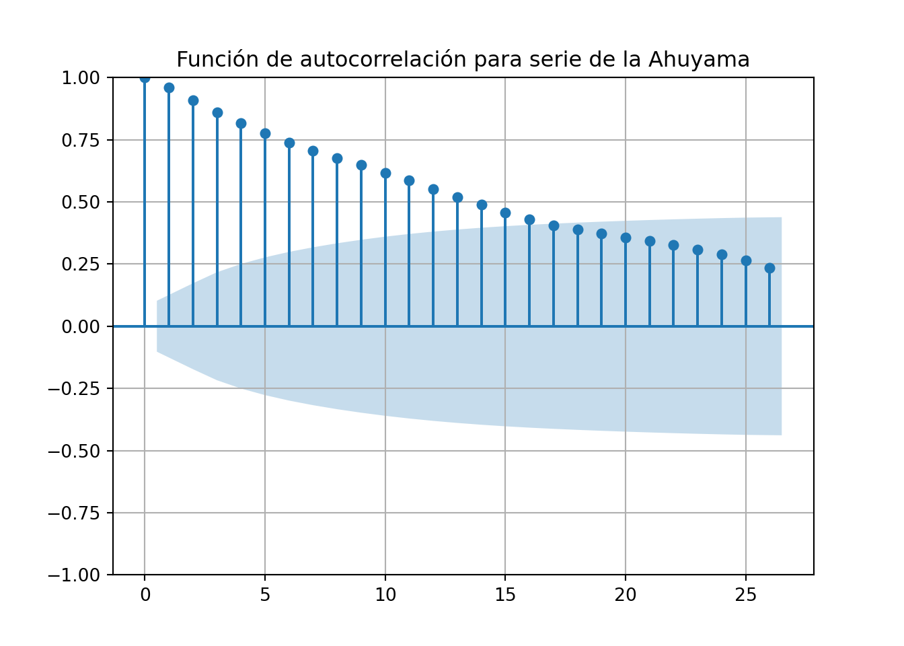

Capítulo 3 Análisis exploratorio de las series de tiempo
En esta sección se hará una exploración inicial de las series de tiempo para los productos en cada ciudad, se revisará la estructura de la serie, su estacionalidad, estacionariedad y su descomposición con el fin de determinar si requiere transformaciones o tratamiento adicional para la etapa de modelación.
Para facilitar el proceso de definición la estacionalidad de las series se crean las siguiente funciones con el fin de formatear el resultado de los test Dickey Fuller Aumentado y KPSS:
import statsmodels
from statsmodels.tsa.stattools import adfuller
from statsmodels.tsa.stattools import kpss
from statsmodels.tsa.seasonal import seasonal_decompose
from pandas.plotting import autocorrelation_plot
from statsmodels.tsa.seasonal import seasonal_decompose
from statsmodels.graphics import tsaplots
def formated_adf(series):
adf_result= adfuller(series,autolag="AIC")
output_df= pd.DataFrame.from_dict({"ADF Stat:":adf_result[0],"p-value":adf_result[1],"Crit_val1%:":adf_result[4]["1%"],
"Crit_val5%:":adf_result[4]["5%"],"Crit_val10%":adf_result[4]["10%"],"Interpretation":None},orient="index")
output_df= output_df.rename(columns={0:"Resultado"})
adf_pval = adf_result[1]
if adf_pval>0.05:
interp="La serie no es estacionaria"
else:
interp="La serie es estacionaria"
output_df["Resultado"]["Interpretation"]=interp
return (output_df,adf_pval)
def formated_kpss(series):
kpss_result= kpss(series)
output_df= pd.DataFrame.from_dict({"KPSS Stat:": kpss_result[0],"p-value": kpss_result[1],"Lags": kpss_result[2],
"Crit_val10%:": kpss_result[3]["10%"],"Crit_val5%": kpss_result[3]["5%"],"Crit_val2.5%": kpss_result[3]["2.5%"],
"Crit_val1%": kpss_result[3]["1%"]
,"Interpretation":None},orient="index")
output_df= output_df.rename(columns={0:"Resultado"})
kpss_pval= kpss_result[1]
if kpss_pval<0.05:
interp="La serie no es estacionaria"
else:
interp="La serie es estacionaria"
output_df["Resultado"]["Interpretation"]=interp
return (output_df,kpss_pval)3.1 Análisis de series de tiempo de precio promedio mayorista semanal para la ciudad de Armenia
3.1.1 Ahuyama
Como primera medida se aisla la serie de tiempo y directamente se genera una primera diferencia, una segunda diferencia, y medias moviles de 5, 10 y 20 periodos para ver como se comporta en general la serie de tiempo y su tendencia:
ahuyama_ts= series_armenia[["Ahuyama_axm_merc"]]
ahuyama_ts["SMA5"]=ahuyama_ts["Ahuyama_axm_merc"].rolling(5).mean()## <string>:1: SettingWithCopyWarning:
## A value is trying to be set on a copy of a slice from a DataFrame.
## Try using .loc[row_indexer,col_indexer] = value instead
##
## See the caveats in the documentation: https://pandas.pydata.org/pandas-docs/stable/user_guide/indexing.html#returning-a-view-versus-a-copy## <string>:1: SettingWithCopyWarning:
## A value is trying to be set on a copy of a slice from a DataFrame.
## Try using .loc[row_indexer,col_indexer] = value instead
##
## See the caveats in the documentation: https://pandas.pydata.org/pandas-docs/stable/user_guide/indexing.html#returning-a-view-versus-a-copyahuyama_ts["SMA20"]= ahuyama_ts["Ahuyama_axm_merc"].rolling(20).mean()
ahuyama_ts["diff1"]= ahuyama_ts["Ahuyama_axm_merc"].diff()
ahuyama_ts["diff2"]= ahuyama_ts["diff1"].diff()
import matplotlib.pyplot as plt
plt.plot(ahuyama_ts.index,ahuyama_ts[["Ahuyama_axm_merc"]],linewidth=1.2,marker="o",color="blue",label="Serie ppal")
plt.plot(ahuyama_ts.index,ahuyama_ts["SMA5"],linewidth=1,color="red",label="SMA5")
plt.plot(ahuyama_ts.index,ahuyama_ts["SMA10"],linewidth=1,color="green",label="SMA10")
plt.plot(ahuyama_ts.index,ahuyama_ts["SMA20"],linewidth=1,color="orange",label="SMA20")
plt.title("Precios mayoristas promedio semanales de la ahuyama en la ciudad de Armenia")
plt.ylabel("Precio (pesos colombianos)", fontsize=12)
plt.xlabel("Dia de referencia - Inicio semana",fontsize= 12)
plt.xticks(rotation='vertical')## (array([16436., 16801., 17167., 17532., 17897., 18262., 18628., 18993.,
## 19358.]), [Text(16436.0, 0, '2015'), Text(16801.0, 0, '2016'), Text(17167.0, 0, '2017'), Text(17532.0, 0, '2018'), Text(17897.0, 0, '2019'), Text(18262.0, 0, '2020'), Text(18628.0, 0, '2021'), Text(18993.0, 0, '2022'), Text(19358.0, 0, '2023')])
Al visualizar la serie de tiempo de los precios promedio semanales de la ahuyama se puede apreciar que no hay un patrón claro que demarque periodos o ciclos consistentes para el precio, al apreciar las medias moviles se puede apreciar que el suavizamiento de las mismas no termina generando evidencia clara de algún patrón estacional, lo único que se puede abstraer con claridad es que este producto ha tenido momentos de “pico de precio” alcanzando valores por encima de los 1200 pesos colombianos, este caso de alza de precio no ha sido exclusivo del periodo pos-pandemia sino que particularmente para este producto ya se habia presentado en el pasado.
Ahora veamos un lag_plot con un rezago para esta serie de tiempo:
pd.plotting.lag_plot(ahuyama_ts[["Ahuyama_axm_merc"]],lag=1)
plt.title("Lag plot serie de precios promedios mayoristas semanales Ahuyama" )
plt.show()
A través del lag plot con un rezgo es posible apreciar que los datos de esta serie de tiempo exhiben un patrón lineal lo cual permite diagnosticar visualmente que la serie de tiempo en revisión tiene presencia de autocorrelación serial, seguidamente es claro que los datos no siguen un patrón aleatorio por lo tanto esta serie de tiempo no exhibe un patrón o dinámica aleatoria, finalmente teniendo en cuenta que cuando los datos presentan comportamiento periodico este tipo de gráfica toma comportamientos circulares o sinusuoidales, es posible inferir que efectivamente esta serie de tiempo no tiene estacionariedad clara.
Demarcado lo anterior es conveniente revisar el comportamiento de la autocorrelación de la serie, para esto se genera un gráfico de función de autocorrelación (acf):
tsaplots.plot_acf(ahuyama_ts[["Ahuyama_axm_merc"]],title="Función de autocorrelación para serie de la Ahuyama")
plt.show()
La gráfica de la función de autocorrelación permite apreciar que hay correlación positiva entre las observaciones y el descenso hacia valores cercanos a 0 es lento al punto en el cual los primeros 15 rezagos resulta ser significativos, asi mismo es posible apreciar que el patrón de descenso es lineal por lo tanto no se aprecia alguna dinámica clara de estacionalidad, sin embargo el aspecto de la gráfica si lleva a inferir que la serie de tiempo no es estacionaria y por ende tiene presencia de tendencia dentro de su estructura.
Para validar estos elementos que se han mencionado se procede a graficar la descomposición de la serie de tiempo con el fin de visualizar sus componentes:
from statsmodels.tsa.seasonal import seasonal_decompose
ahuy_decomp_axm= seasonal_decompose(ahuyama_ts["Ahuyama_axm_merc"],model="multiplicative")
ahuy_decomp_axm.plot()
plt.show()La descomposición de la serie de tiempo permite evidenciar que efectivamente la serie cuenta con un componente de tendencia que se acentua especialmente al final, en lo que respecta a la estacionalidad se puede apreciar que los “periodos” de la serie son extensos y además fluactuantes, tal como lo evidencia el lag plot no hay un comportamiento marcado en términos sinusoidales, es evidente un comportamiento de disminución de los precios a inicio de año y de un comportamiento creciente a lo largo del transcurso del mismo.
Ahora que se conoce más en detalle la estructura y comportamiento de la series, procedamos a verificar a partir de test estadísticos si esta serie es o no estacionaria, para esto se hará uso de las pruebas Dickey Fuller Aumentado y Kwiatkowski-Phillips-Schmidt-Shin (KPSS):
## ( Resultado
## KPSS Stat: 0.639845
## p-value 0.019014
## Lags 11.0
## Crit_val10%: 0.347
## Crit_val5% 0.463
## Crit_val2.5% 0.574
## Crit_val1% 0.739
## Interpretation La serie no es estacionaria, 0.019014071707958637)## ( Resultado
## ADF Stat: -2.197821
## p-value 0.207037
## Crit_val1%: -3.448646
## Crit_val5%: -2.869602
## Crit_val10% -2.571065
## Interpretation La serie no es estacionaria, 0.2070372457079121)Al revisar ambos test estadísticos se puede apreciar que la serie de tiempo de la ahuyama no es estacionaria, por ende se puede decir que esta serie de tiempo tiene tendencia y por ende los cambios en el tiempo inciden o generan cambios en la forma de la serie, por lo tanto la tendencia que describe esta serie no es determinista y propiedades como su media y varianza son variables en el tiempo, asi las cosas, el nivel de integración de esta serie es mayor que 0, para poder determinar de manera precisa el nivel de integración es necesario diferenciar la serie de tiempo con el fin de validar si con una primera diferenciación logra convertirse en una serie estacionaria.
plt.plot(ahuyama_ts["diff1"],linewidth=1.2,color="blue",label="Serie ppal")
plt.title("Precios mayoristas promedio semanales de la ahuyama en la ciudad de Armenia (diff1)",fontsize=10)
plt.ylabel("Precio (pesos colombianos)", fontsize=12)
plt.xlabel("Dia de referencia - Inicio semana",fontsize= 12)
plt.xticks(rotation='vertical')## (array([16436., 16801., 17167., 17532., 17897., 18262., 18628., 18993.,
## 19358.]), [Text(16436.0, 0, '2015'), Text(16801.0, 0, '2016'), Text(17167.0, 0, '2017'), Text(17532.0, 0, '2018'), Text(17897.0, 0, '2019'), Text(18262.0, 0, '2020'), Text(18628.0, 0, '2021'), Text(18993.0, 0, '2022'), Text(19358.0, 0, '2023')]) Ahora realicemos un lag plot respecto a la serie diferenciada con el fin de ver su comportamiento:
Ahora realicemos un lag plot respecto a la serie diferenciada con el fin de ver su comportamiento:
pd.plotting.lag_plot(ahuyama_ts["diff1"],lag=1)
plt.title("Lag plot serie de precios promedios mayoristas semanales Ahuyama" )
plt.show()
Con la aplicación de la primera diferencia se puede apreciar que el comportamiento lineal del lag plot de la serie original se pierde y varia hacia un patrón aleatorio en donde la nube de puntos no evidencia una dirección o trayectoria clara, esto da lugar a pensar que posiblemente el problema de autocorrelación tambien se encuentre corregido, para validar esto se genera nuevamente una gráfica acf()
tsaplots.plot_acf(ahuyama_ts[["diff1"]],title="Función de autocorrelación para serie diferenciada de la Ahuyama")
plt.show()
La correlación entre las observaciones y sus rezagos tiende a 0 por lo tanto la serie diferenciada de la ahuyama carece de problemas de autocorrelación serial, por lo tanto el aumento de una observación anterior no afecta necesariamente las observaciones siguientes.
El análisis gráfico da lugar a establecer que la primera diferencia de esta serie de tiempo no es estacionaria, confirmemoslo aplicando las pruebas adf y KPSS:
## ( Resultado
## KPSS Stat: 0.178315
## p-value 0.1
## Lags 1.0
## Crit_val10%: 0.347
## Crit_val5% 0.463
## Crit_val2.5% 0.574
## Crit_val1% 0.739
## Interpretation La serie es estacionaria, 0.1)
##
## <string>:2: InterpolationWarning: The test statistic is outside of the range of p-values available in the
## look-up table. The actual p-value is greater than the p-value returned.## ( Resultado
## ADF Stat: -9.0713
## p-value 0.0
## Crit_val1%: -3.448646
## Crit_val5%: -2.869602
## Crit_val10% -2.571065
## Interpretation La serie es estacionaria, 4.294958554449737e-15)Al aplicar ambas pruebas la interpretación de los valores p conduce a concluir que la primera diferencia de la serie de tiempo de precios resulta es estacionaria, por ende se puede concluir que la serie de tiempo para este producto tiene un nivel de integración 1.
3.1.2 Cebolla Junca
cebollaj_ts= series_armenia[["Cebolla junca_axm_merc"]]
cebollaj_ts["SMA5"]=cebollaj_ts["Cebolla junca_axm_merc"].rolling(5).mean()## <string>:1: SettingWithCopyWarning:
## A value is trying to be set on a copy of a slice from a DataFrame.
## Try using .loc[row_indexer,col_indexer] = value instead
##
## See the caveats in the documentation: https://pandas.pydata.org/pandas-docs/stable/user_guide/indexing.html#returning-a-view-versus-a-copy## <string>:1: SettingWithCopyWarning:
## A value is trying to be set on a copy of a slice from a DataFrame.
## Try using .loc[row_indexer,col_indexer] = value instead
##
## See the caveats in the documentation: https://pandas.pydata.org/pandas-docs/stable/user_guide/indexing.html#returning-a-view-versus-a-copycebollaj_ts["SMA20"]= cebollaj_ts["Cebolla junca_axm_merc"].rolling(20).mean()
cebollaj_ts["diff1"]= cebollaj_ts["Cebolla junca_axm_merc"].diff()
cebollaj_ts["diff2"]= cebollaj_ts["diff1"].diff()
plt.plot(cebollaj_ts.index,cebollaj_ts[["Cebolla junca_axm_merc"]],linewidth=1.2,marker="o",color="blue",label="Serie ppal")
plt.plot(cebollaj_ts.index,cebollaj_ts["SMA5"],linewidth=1,color="red",label="SMA5")
plt.plot(cebollaj_ts.index,cebollaj_ts["SMA10"],linewidth=1,color="green",label="SMA10")
plt.plot(cebollaj_ts.index,cebollaj_ts["SMA20"],linewidth=1,color="orange",label="SMA20")
plt.ylabel("Precio (pesos colombianos)", fontsize=12)
plt.xlabel("Dia de referencia - Inicio semana",fontsize= 12)
plt.xticks(rotation='vertical')## (array([16436., 16801., 17167., 17532., 17897., 18262., 18628., 18993.,
## 19358.]), [Text(16436.0, 0, '2015'), Text(16801.0, 0, '2016'), Text(17167.0, 0, '2017'), Text(17532.0, 0, '2018'), Text(17897.0, 0, '2019'), Text(18262.0, 0, '2020'), Text(18628.0, 0, '2021'), Text(18993.0, 0, '2022'), Text(19358.0, 0, '2023')])
## ( Resultado
## KPSS Stat: 0.655618
## p-value 0.01758
## Lags 11.0
## Crit_val10%: 0.347
## Crit_val5% 0.463
## Crit_val2.5% 0.574
## Crit_val1% 0.739
## Interpretation La serie no es estacionaria, 0.017580164973978154)## ( Resultado
## ADF Stat: -3.387717
## p-value 0.011385
## Crit_val1%: -3.449119
## Crit_val5%: -2.86981
## Crit_val10% -2.571176
## Interpretation La serie es estacionaria, 0.011384809184102474)3.1.3 Habichuela
habichuela_ts= series_armenia[["Habichuela_axm_merc"]]
habichuela_ts["SMA5"]=habichuela_ts["Habichuela_axm_merc"].rolling(5).mean()## <string>:1: SettingWithCopyWarning:
## A value is trying to be set on a copy of a slice from a DataFrame.
## Try using .loc[row_indexer,col_indexer] = value instead
##
## See the caveats in the documentation: https://pandas.pydata.org/pandas-docs/stable/user_guide/indexing.html#returning-a-view-versus-a-copy## <string>:1: SettingWithCopyWarning:
## A value is trying to be set on a copy of a slice from a DataFrame.
## Try using .loc[row_indexer,col_indexer] = value instead
##
## See the caveats in the documentation: https://pandas.pydata.org/pandas-docs/stable/user_guide/indexing.html#returning-a-view-versus-a-copyhabichuela_ts["SMA20"]= habichuela_ts["Habichuela_axm_merc"].rolling(20).mean()
habichuela_ts["diff1"]= habichuela_ts["Habichuela_axm_merc"].diff()
habichuela_ts["diff2"]= habichuela_ts["diff1"].diff()
plt.plot(habichuela_ts.index,habichuela_ts[["Habichuela_axm_merc"]],linewidth=1.2,marker="o",color="blue",label="Serie ppal")
plt.plot(habichuela_ts.index,habichuela_ts["SMA5"],linewidth=1,color="red",label="SMA5")
plt.plot(habichuela_ts.index,habichuela_ts["SMA10"],linewidth=1,color="green",label="SMA10")
plt.plot(habichuela_ts.index,habichuela_ts["SMA20"],linewidth=1,color="orange",label="SMA20")
plt.ylabel("Precio (pesos colombianos)", fontsize=12)
plt.xlabel("Dia de referencia - Inicio semana",fontsize= 12)
plt.xticks(rotation='vertical')## (array([16436., 16801., 17167., 17532., 17897., 18262., 18628., 18993.,
## 19358.]), [Text(16436.0, 0, '2015'), Text(16801.0, 0, '2016'), Text(17167.0, 0, '2017'), Text(17532.0, 0, '2018'), Text(17897.0, 0, '2019'), Text(18262.0, 0, '2020'), Text(18628.0, 0, '2021'), Text(18993.0, 0, '2022'), Text(19358.0, 0, '2023')])
## ( Resultado
## KPSS Stat: 1.808661
## p-value 0.01
## Lags 10.0
## Crit_val10%: 0.347
## Crit_val5% 0.463
## Crit_val2.5% 0.574
## Crit_val1% 0.739
## Interpretation La serie no es estacionaria, 0.01)
##
## <string>:2: InterpolationWarning: The test statistic is outside of the range of p-values available in the
## look-up table. The actual p-value is smaller than the p-value returned.## ( Resultado
## ADF Stat: -2.786733
## p-value 0.060194
## Crit_val1%: -3.448906
## Crit_val5%: -2.869716
## Crit_val10% -2.571126
## Interpretation La serie no es estacionaria, 0.060193942433346984)3.1.4 Tomate Chonto
tomate_ts= series_armenia[["Tomate chonto_axm_merc"]]
tomate_ts["SMA5"]=tomate_ts["Tomate chonto_axm_merc"].rolling(5).mean()## <string>:1: SettingWithCopyWarning:
## A value is trying to be set on a copy of a slice from a DataFrame.
## Try using .loc[row_indexer,col_indexer] = value instead
##
## See the caveats in the documentation: https://pandas.pydata.org/pandas-docs/stable/user_guide/indexing.html#returning-a-view-versus-a-copy## <string>:1: SettingWithCopyWarning:
## A value is trying to be set on a copy of a slice from a DataFrame.
## Try using .loc[row_indexer,col_indexer] = value instead
##
## See the caveats in the documentation: https://pandas.pydata.org/pandas-docs/stable/user_guide/indexing.html#returning-a-view-versus-a-copytomate_ts["SMA20"]= tomate_ts["Tomate chonto_axm_merc"].rolling(20).mean()
tomate_ts["diff1"]= tomate_ts["Tomate chonto_axm_merc"].diff()
tomate_ts["diff2"]= tomate_ts["diff1"].diff()
plt.plot(tomate_ts.index,tomate_ts[["Tomate chonto_axm_merc"]],linewidth=1.2,marker="o",color="blue",label="Serie ppal")
plt.plot(tomate_ts.index,tomate_ts["SMA5"],linewidth=1,color="red",label="SMA5")
plt.plot(tomate_ts.index,tomate_ts["SMA10"],linewidth=1,color="green",label="SMA10")
plt.plot(tomate_ts.index,tomate_ts["SMA20"],linewidth=1,color="orange",label="SMA20")
plt.ylabel("Precio (pesos colombianos)", fontsize=12)
plt.xlabel("Dia de referencia - Inicio semana",fontsize= 12)
plt.xticks(rotation='vertical')## (array([16436., 16801., 17167., 17532., 17897., 18262., 18628., 18993.,
## 19358.]), [Text(16436.0, 0, '2015'), Text(16801.0, 0, '2016'), Text(17167.0, 0, '2017'), Text(17532.0, 0, '2018'), Text(17897.0, 0, '2019'), Text(18262.0, 0, '2020'), Text(18628.0, 0, '2021'), Text(18993.0, 0, '2022'), Text(19358.0, 0, '2023')])
## ( Resultado
## KPSS Stat: 1.008584
## p-value 0.01
## Lags 10.0
## Crit_val10%: 0.347
## Crit_val5% 0.463
## Crit_val2.5% 0.574
## Crit_val1% 0.739
## Interpretation La serie no es estacionaria, 0.01)
##
## <string>:2: InterpolationWarning: The test statistic is outside of the range of p-values available in the
## look-up table. The actual p-value is smaller than the p-value returned.## ( Resultado
## ADF Stat: -4.11231
## p-value 0.000924
## Crit_val1%: -3.448544
## Crit_val5%: -2.869557
## Crit_val10% -2.571041
## Interpretation La serie es estacionaria, 0.0009241291591843274)3.2 Análisis de series de tiempo de precio promedio mayorista semanal para la ciudad de Pereira
3.2.1 Ahuyama
ahuyama_ts_per= series_pereira[["Ahuyama_per_merca"]]
ahuyama_ts_per["SMA5"]=ahuyama_ts_per["Ahuyama_per_merca"].rolling(5).mean()## <string>:1: SettingWithCopyWarning:
## A value is trying to be set on a copy of a slice from a DataFrame.
## Try using .loc[row_indexer,col_indexer] = value instead
##
## See the caveats in the documentation: https://pandas.pydata.org/pandas-docs/stable/user_guide/indexing.html#returning-a-view-versus-a-copy## <string>:1: SettingWithCopyWarning:
## A value is trying to be set on a copy of a slice from a DataFrame.
## Try using .loc[row_indexer,col_indexer] = value instead
##
## See the caveats in the documentation: https://pandas.pydata.org/pandas-docs/stable/user_guide/indexing.html#returning-a-view-versus-a-copyahuyama_ts_per["SMA20"]= ahuyama_ts_per["Ahuyama_per_merca"].rolling(20).mean()
ahuyama_ts_per["diff1"]= ahuyama_ts_per["Ahuyama_per_merca"].diff()
ahuyama_ts_per["diff2"]= ahuyama_ts_per["diff1"].diff()
plt.plot(ahuyama_ts_per.index,ahuyama_ts_per[["Ahuyama_per_merca"]],linewidth=1.2,marker="o",color="blue",label="Serie ppal")
plt.plot(ahuyama_ts_per.index,ahuyama_ts_per["SMA5"],linewidth=1,color="red",label="SMA5")
plt.plot(ahuyama_ts_per.index,ahuyama_ts_per["SMA10"],linewidth=1,color="green",label="SMA10")
plt.plot(ahuyama_ts_per.index,ahuyama_ts_per["SMA20"],linewidth=1,color="orange",label="SMA20")
plt.ylabel("Precio (pesos colombianos)", fontsize=12)
plt.xlabel("Dia de referencia - Inicio semana",fontsize= 12)
plt.xticks(rotation='vertical')## (array([16436., 16801., 17167., 17532., 17897., 18262., 18628., 18993.,
## 19358.]), [Text(16436.0, 0, '2015'), Text(16801.0, 0, '2016'), Text(17167.0, 0, '2017'), Text(17532.0, 0, '2018'), Text(17897.0, 0, '2019'), Text(18262.0, 0, '2020'), Text(18628.0, 0, '2021'), Text(18993.0, 0, '2022'), Text(19358.0, 0, '2023')])
3.2.2 Cebolla Junca
cebollaj_ts_per= series_pereira[["Cebolla junca_per_merca"]]
cebollaj_ts_per["SMA5"]=cebollaj_ts_per["Cebolla junca_per_merca"].rolling(5).mean()## <string>:1: SettingWithCopyWarning:
## A value is trying to be set on a copy of a slice from a DataFrame.
## Try using .loc[row_indexer,col_indexer] = value instead
##
## See the caveats in the documentation: https://pandas.pydata.org/pandas-docs/stable/user_guide/indexing.html#returning-a-view-versus-a-copy## <string>:1: SettingWithCopyWarning:
## A value is trying to be set on a copy of a slice from a DataFrame.
## Try using .loc[row_indexer,col_indexer] = value instead
##
## See the caveats in the documentation: https://pandas.pydata.org/pandas-docs/stable/user_guide/indexing.html#returning-a-view-versus-a-copycebollaj_ts_per["SMA20"]= cebollaj_ts_per["Cebolla junca_per_merca"].rolling(20).mean()
cebollaj_ts_per["diff1"]= cebollaj_ts_per["Cebolla junca_per_merca"].diff()
cebollaj_ts_per["diff2"]= cebollaj_ts_per["diff1"].diff()
plt.plot(cebollaj_ts_per.index,cebollaj_ts_per[["Cebolla junca_per_merca"]],linewidth=1.2,marker="o",color="blue",label="Serie ppal")
plt.plot(cebollaj_ts_per.index,cebollaj_ts_per["SMA5"],linewidth=1,color="red",label="SMA5")
plt.plot(cebollaj_ts_per.index,cebollaj_ts_per["SMA10"],linewidth=1,color="green",label="SMA10")
plt.plot(cebollaj_ts_per.index,cebollaj_ts_per["SMA20"],linewidth=1,color="orange",label="SMA20")
plt.ylabel("Precio (pesos colombianos)", fontsize=12)
plt.xlabel("Dia de referencia - Inicio semana",fontsize= 12)
plt.xticks(rotation='vertical')## (array([16436., 16801., 17167., 17532., 17897., 18262., 18628., 18993.,
## 19358.]), [Text(16436.0, 0, '2015'), Text(16801.0, 0, '2016'), Text(17167.0, 0, '2017'), Text(17532.0, 0, '2018'), Text(17897.0, 0, '2019'), Text(18262.0, 0, '2020'), Text(18628.0, 0, '2021'), Text(18993.0, 0, '2022'), Text(19358.0, 0, '2023')])
3.2.3 Habichuela
habichuela_ts_per= series_pereira[["Habichuela_per_merca"]]
habichuela_ts_per["SMA5"]=habichuela_ts_per["Habichuela_per_merca"].rolling(5).mean()## <string>:1: SettingWithCopyWarning:
## A value is trying to be set on a copy of a slice from a DataFrame.
## Try using .loc[row_indexer,col_indexer] = value instead
##
## See the caveats in the documentation: https://pandas.pydata.org/pandas-docs/stable/user_guide/indexing.html#returning-a-view-versus-a-copy## <string>:1: SettingWithCopyWarning:
## A value is trying to be set on a copy of a slice from a DataFrame.
## Try using .loc[row_indexer,col_indexer] = value instead
##
## See the caveats in the documentation: https://pandas.pydata.org/pandas-docs/stable/user_guide/indexing.html#returning-a-view-versus-a-copyhabichuela_ts_per["SMA20"]= habichuela_ts_per["Habichuela_per_merca"].rolling(20).mean()
habichuela_ts_per["diff1"]= habichuela_ts_per["Habichuela_per_merca"].diff()
habichuela_ts_per["diff2"]= habichuela_ts_per["diff1"].diff()
plt.plot(habichuela_ts_per.index,habichuela_ts_per[["Habichuela_per_merca"]],linewidth=1.2,marker="o",color="blue",label="Serie ppal")
plt.plot(habichuela_ts_per.index,habichuela_ts_per["SMA5"],linewidth=1,color="red",label="SMA5")
plt.plot(habichuela_ts_per.index,habichuela_ts_per["SMA10"],linewidth=1,color="green",label="SMA10")
plt.plot(habichuela_ts_per.index,habichuela_ts_per["SMA20"],linewidth=1,color="orange",label="SMA20")
plt.ylabel("Precio (pesos colombianos)", fontsize=12)
plt.xlabel("Dia de referencia - Inicio semana",fontsize= 12)
plt.xticks(rotation='vertical')## (array([16436., 16801., 17167., 17532., 17897., 18262., 18628., 18993.,
## 19358.]), [Text(16436.0, 0, '2015'), Text(16801.0, 0, '2016'), Text(17167.0, 0, '2017'), Text(17532.0, 0, '2018'), Text(17897.0, 0, '2019'), Text(18262.0, 0, '2020'), Text(18628.0, 0, '2021'), Text(18993.0, 0, '2022'), Text(19358.0, 0, '2023')])
3.2.4 Tomate Chonto
tomate_ts_per= series_pereira[["Tomate chonto_per_merca"]]
tomate_ts_per["SMA5"]=tomate_ts_per["Tomate chonto_per_merca"].rolling(5).mean()## <string>:1: SettingWithCopyWarning:
## A value is trying to be set on a copy of a slice from a DataFrame.
## Try using .loc[row_indexer,col_indexer] = value instead
##
## See the caveats in the documentation: https://pandas.pydata.org/pandas-docs/stable/user_guide/indexing.html#returning-a-view-versus-a-copy## <string>:1: SettingWithCopyWarning:
## A value is trying to be set on a copy of a slice from a DataFrame.
## Try using .loc[row_indexer,col_indexer] = value instead
##
## See the caveats in the documentation: https://pandas.pydata.org/pandas-docs/stable/user_guide/indexing.html#returning-a-view-versus-a-copytomate_ts_per["SMA20"]= tomate_ts_per["Tomate chonto_per_merca"].rolling(20).mean()
tomate_ts_per["diff1"]= tomate_ts_per["Tomate chonto_per_merca"].diff()
tomate_ts_per["diff2"]= tomate_ts_per["diff1"].diff()
plt.plot(tomate_ts_per.index,tomate_ts_per[["Tomate chonto_per_merca"]],linewidth=1.2,marker="o",color="blue",label="Serie ppal")
plt.plot(tomate_ts_per.index,tomate_ts_per["SMA5"],linewidth=1,color="red",label="SMA5")
plt.plot(tomate_ts_per.index,tomate_ts_per["SMA10"],linewidth=1,color="green",label="SMA10")
plt.plot(tomate_ts_per.index,tomate_ts_per["SMA20"],linewidth=1,color="orange",label="SMA20")
plt.ylabel("Precio (pesos colombianos)", fontsize=12)
plt.xlabel("Dia de referencia - Inicio semana",fontsize= 12)
plt.xticks(rotation='vertical')## (array([16436., 16801., 17167., 17532., 17897., 18262., 18628., 18993.,
## 19358.]), [Text(16436.0, 0, '2015'), Text(16801.0, 0, '2016'), Text(17167.0, 0, '2017'), Text(17532.0, 0, '2018'), Text(17897.0, 0, '2019'), Text(18262.0, 0, '2020'), Text(18628.0, 0, '2021'), Text(18993.0, 0, '2022'), Text(19358.0, 0, '2023')])